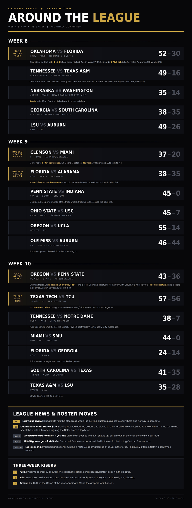

Eighteen games, all finals confirmed. Two undefeateds fall, a 57-56 triple-OT, and Florida State sells for $175.

Eighteen games, two undefeateds knocked off, a 57-56 triple-overtime survival act, four shutout-or-worse beatdowns, one coach out the door, and a franchise sold for $175 to the guy who spent all afternoon insulting it. Let's get into it.
Two 7-0 teams walked into Norman. One walked out.
Stew put on a clinic in front of his own crowd — Austin Mack went 27-of-44 for 345 and five touchdowns without a single interception, while Luke Reynolds turned into an unguardable problem at tight end: 7 catches, 158 yards, three scores. The reigning champ moves to 8-0 (4-0), and the road to a repeat officially runs through Norman.
Polo takes his first L of the year at 7-1. Remember that, because he wasn't done for the month.
Purp didn't beat Bawce, he processed him. Forty-nine points, a 33-point margin, and Curt announcing the game with nothing but "Lmaooooooooooooo" attached, which turned out to be the most accurate preview in league history.
The new guy has arrived. Jarvis, in his first month in the building, put 35 on Frank and held him to two touchdowns. Frank spent the week posting "stop the cap" GIFs during the Florida State auction. Should have been watching film.
Best non-GOTW game of the week. Ice Man survives Thrash by three in a game that stayed live to the end.
Cell handles the CPU and pushes 49 on the scoreboard doing it.
Not confirmed: Nas vs Quan was announced live in the chat during Week 8 but never appears in the results. Given Nas walked out of the league mid-week, safe to assume it died on the vine.
LT took his talents to South Beach and left with the building. T.J. Moore was the story: 7 catches for 232 yards at 33.1 a pop, which is less a receiving performance than a structural failure. The Tigers survive the Hurricane and improve to 8-0 in conference play. Lute falls to 7-1.
The Swamp did what the Swamp does. Polo's defense rattled Keelon Russell into two pick-sixes and handed Jason his first loss of the season. Both teams land at 8-1, but only one flew home with an unbeaten record intact, and it wasn't the one that came in ranked fourth.
Jason's response, roughly 24 hours later, was to put Alabama on the market for $500. More on that below.
A 45-0 shutout. States erased Gooch completely — no points, no answers, no film worth keeping. It's the most complete performance of the three weeks, and it's the reason the Week 10 GOTW got made.
Curt takes his frustration out on Teeric to the tune of 45-7. A 38-point win, and he still found time to argue overtime rules in the main chat two days later.
Bowzer hangs 55 on TV. Tune-up game, and he treated it like a statement.
Your commissioner would like to remind everyone that a win is a win. Pat beat a CPU-controlled Auburn team by two points. Forty-four points allowed. To Auburn. We're moving on.
Old rivalry renewed at Autzen, and it delivered a Game of the Year candidate.
Quinton Martin Jr. put up one of the loudest losing performances you will ever see: 16 carries, 304 yards, 4 touchdowns, a 19.0 average — and a loss, because the Ducks had answers everywhere. Cannon Ball returned from injury and immediately did everything: 81 rushing, 74 receiving, 143 on kick returns, and a touchdown in all three phases. Jordon Davison brought it home with 13 carries for 122 and three scores.
Bowzer's own writeup called it an instant classic decided by a last-second defensive stand. For once the guy making the graphics wasn't overselling it. States goes from a 45-0 shutout to a 43-36 loss in seven days.
Game of the month, and nobody made a graphic for it.
KJ survives Silingi by a single point in three overtimes. Bhog's entire review: "What a fuckin game." Silingi's own response was pure shellshock: "damn, GG. so many wild things goin on."
Then came the regret, from the man who lost by one. "I should have just gone for two. I debated it 🙁" KJ told him the rulebook wasn't optional: "real life rule is you were supposed to in double ot." Curt jumped in to correct the correction — "Its the 3rd OT" — and when KJ pushed back that third overtime is two-point-only, Curt closed the case with the flex of the month: "I know because Ive played in a 4OT game last year."
One hundred and thirteen combined points. Get a box score posted.
Purp's second demolition of the stretch, and this one came with commentary.
Tayne lost 38-7 and produced the finest postmortem in Campus Kings history. Try to follow the logic: "I didn't start my starters either." "I started my recruits and some seniors for there 4 gms." "I wasn't even at the controller I was in a conversation the whole time." "My whole entire depth chart was set for CPU." And the closer: "I lost but what you think you saw isn't what I'm going to be running lol. Nor personnel. Nor QB."
He also wants it on the record that this was all part of the plan: "No where near locked I needed to lose that actually anyway." "Rather play in round 1 anyway." "Hate that bye anyway." Three separate "anyway"s about a 31-point loss.
Stew had asked for exactly this outcome in advance — "Need u to lose so I can get my 1 seed" — and Purp spent the following night complaining he couldn't control his players through the input delay, which Stew wasn't buying from a man who'd just buried the No. 2 team: "Didn't you just have a lot of Success vs the best player in the league?"
Lute answers a 17-point loss with a 44-0 shutout of ZBO. Nothing to analyze. ZBO didn't cross the goal line.
Polo's third straight ranked scrap and his second straight win, holding Ice Man to 14. Two weeks after losing the GOTW in Norman, he's beaten Jason and Ice Man back to back.
Thrash bounces back from his Week 8 loss to Ice Man by taking down Work in a shootout. Work, for the record, had already filed his complaint about the conditions: "Sorry if I can't control the fucking hotel locking the input."
Bawce needed this one badly after the 49-16 humbling, and got it. He'd spent the auction announcing his budget — "Just got paid too…. We bout to put some jewels on that belt at the end of the year" — so at least the on-field product finally showed up.
Nas is out. Mid-week he pulled the plug. "I tried having fun in this league I genuinely can't." The reasoning, in his words: "Mostly because I can't compete in here everybody got custom playbooks and I'm just tryna have fun." He left the door cracked — "Maybe later I come back but idk I just don't got love for it like I used too" — and named his last straw on the way out, which brings us to the main event.
The Florida State auction, or: how to negotiate against yourself. With FSU open, the room smelled blood. The bidding opened at three dollars. Curt christened it "The lowest bid ever in Campus Kings History." Bawce tried to talk it up to $25 and went straight at the pockets in the room — "Open that purse up."
The twist: the eventual buyer spent the entire auction talking the price down. Quan, on the team he was actively trying to buy: "Florida state is not a top team lmao." He told Bawce to go bid on Auburn instead. States backed him up — "FSU isn't a top team" — then revealed his own motive: "I'm gonna bid on FSU just to have the rights Quan." Frank had no patience for the routine: "BASICALLY ONLY YOU CAN MAKE THEM BALL AND NO ONE SHOULD BID ON THEM, got it."
Bhog tried to jump the line — "FSU open? 👀 💰" — and got buried by the commissioner: "I will denounce that shit. Mf you been on 3 teams." He fired back "That's my team punk" anyway. It didn't take.
Bhog eventually tapped out of the price war: "Ain't think it was gone be a 50 bid for them mfs. Then Quan wanna basically double it! He can have em 🤣" He badly undershot it. Florida State closed at $175 to Quan — from a three-dollar open to a hundred and seventy-five, for a program its own buyer publicly rated as not a top team.
Two rulings from the top. LT clarified the missed-time policy: the win goes to whoever showed up, "as long as they say they want it" — and noted the real problem is nobody wants to ask. "people be hesitant to say 'hey i want my ff due to him missing the time' lol." This came after Bawce pushed for something harsher: "Man lets start sim lossing these folks missing game times." Separately, Curt confirmed all CPU games get a forfeit win, and reminded everyone that games don't get scheduled in the main chat — tag him or LT for a room.
Everybody's a broker now. Jason offered Alabama to Lux for $500 flat. Stew tried to cut the line with "I'll take em," caught a disgusted GIF from Bawce for it, and backpedaled: "Thought we was boys mybad." Bhog pitched BYU with the sales line of the month: "I got these mormans lookin right cuhh 👀 I'll sell em to ya." Bawce offered up Texas A&M and volunteered to take Colorado himself. Lux passed on all of it: "i do not ty tho."
Purp. 49-16 over Bawce, 38-7 over Tayne. Two games, 87 points scored, 23 allowed, and both opponents left making excuses. Nobody in the league is playing better right now.
Polo. Lost the GOTW in Norman, then beat Jason in the Swamp and handled Ice Man. One loss on the season and it came to the reigning champ.
Bowzer. 55-14 and 43-36. Won the Game of the Year candidate and made the graphic for it himself.
Tayne. 38-7, followed by roughly forty messages of context.
Bawce. Lost by 33, spent two days brokering other people's teams, then beat Cell. Net positive, barely.
Weeks 8-10 in the books. Stew is the last unbeaten standing, Purp is the hottest coach in the league, KJ survived 113 points of triple-overtime chaos, and Quan paid $175 for a franchise he spent a full afternoon calling worthless.
{kind=link}